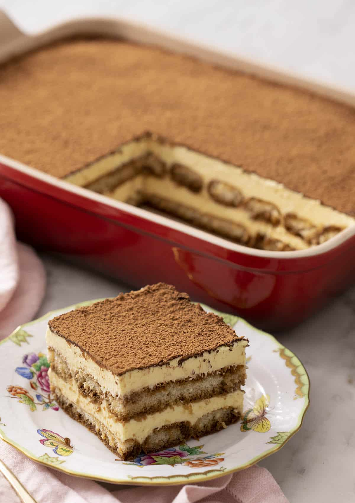

Sweet Tiramisu
❣◦❖◦❣◦❧◦❣◦❖◦❣
Sigue la receta de Michito repostero para hacer este deliciosos dulce italiano
.・゜゜・❥・゜゜・．
"Descubre el secreto mejor guardado de Italia con esta irresistible receta de Tiramisu. Sumérgete en capas de suave mascarpone, café recién hecho y el toque perfecto de cacao. Una experiencia culinaria fascinante. ¿Listo para crear magia en tu cocina?"
Ingredientes
Crema
- 4 huevos atemperados
- 100 gr azúcar glass
- 500 gr queso mascarpone atemperado (Galbani)
- 1 cucharada de ron
Base
- 2 tazas de café solo
- 16 bizcochos de soletilla (Fontaneda)
Instrucciones
Crema
- Pon en un bol cuatro yemas y en otro bol cuatro claras.
- Bate las yemas y la mitad del azúcar glass con batidora de varillas, hasta que espume y el azúcar se disuelva bien. Cuando están a punto de nieve añade poco a poco la otra mitad del azúcar glass para que se vaya absorbiendo.
- Con las varillas limpias y secas, empieza a montarlas claras en el otro bol.
- Añade el queso mascarpone a las yemas y lo mezclas con la batidora a baja velocidad.
- Ahora añade poco a poco, con una espátula, el merengue a la mezcla de las yemas y el mascarpone, y ve removiendo con movimientos envolventes. Una vez esté todo integrado añade una cucharada de ron y sigue removiendo con movimientos envolventes.
Base
- Ahora moja los bizcochos de soletilla por la parte de abajo y los vas colocando en una fuente.
Montaje
- Una vez tengas toda la base cubierta, vuelcas la crema y la distribuyes de manera homogénea con la espátula.
- Lo guardas en la nevera con un film transparente y lo dejas reposar toda la noche. Se recomieda hacer el tiramisu un día antes.
- Cuando lo vayas a comer, espolvorea con un colador el cacao por encima del tiramisú. Et voilà ya tienes el tiramisu listo para disfrutar!
Es hora de deleitar los paladares de tus familiares y amigos.
❣◦❖◦❣◦❧◦❣◦❖◦❣
